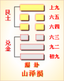
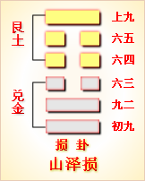

<!DOCTYPE html PUBLIC "-//W3C//DTD XHTML 1.0 Transitional//EN" "http://www.w3.org/TR/xhtml1/DTD/xhtml1-transitional.dtd">

<html xmlns="http://www.w3.org/1999/xhtml">
<head>
<meta content="text/html; charset=utf-8" http-equiv="Content-Type"/>
<title>周易第四十一卦：损卦 山泽�?艮上兑下原文解释翻译-周易-国学�?/title>
<meta content="周易,损卦,山泽�?艮上兑下" name="keywords"/>
<meta content="周易,损卦,山泽�?艮上兑下，周易第四十一卦：损卦 山泽�?艮上兑下解释翻译�?（山泽损）艮上兑�?《损》：有孚，元吉，无咎。可贞，利有攸往。曷之用？二簋可用享�?初九，已事遄往，无咎。酌损之�?九二，利贞。征凶，弗损，益之�?六三，三人行则损一�? name="description"/>
<link href="css.css" media="screen" rel="stylesheet" type="text/css"/>
</head>
<body>
<div class="gxlayout">
</div>
<div class="gxlayout">
<div class="ihead">
<div class="title"><a>周易</a></div>
<ul class="more fl">
<li>当前位置:<a>国学梦首�?/a> &gt; <a>国学经典</a> &gt; <a>经部</a> &gt; <a>四书五经</a> &gt; <a>周易</a> &gt;  周易第四十一卦：损卦 山泽�?艮上兑下原文解释翻译</li>
</ul>
</div>
<div class="gxbl fl">
<div class="latitle">

<h1>周易第四十一卦：损卦 山泽�?艮上兑下</h1>
<div class="lainfo"><span>作者：佚名</span> <span>全集�?a>周易</a></span> <span>来源：网�?/span> <span>[<a rel="nofollow" target="_blank">挑错/完善</a>]</span></div>
</div>
<div class="lacontent">
<div class="clearfix"></div>
<!--<!-- allowfullscreen="" frameborder="0" height="36" src="http://www.ximalaya.com/swf/sound/yellow.swf?id=1382604&amp;auto=true" width="260"></iframe>-->
<p style="text-align:center"></p>
<p style="text-align:center"><a>周易第四十一卦详�?/a></p>
<p style="text-align:center"><a>第四十一卦初九爻详解</a>　<a>第四十一卦九二爻详解</a>　<a>第四十一卦六三爻详解</a></p>
<p style="text-align:center"><a>第四十一卦六四爻详解</a>　<a>第四十一卦六五爻详解</a>　<a>第四十一卦上九爻详解</a></p>
<p><strong><a target="_blank">周易</a>第四十一�?�?山泽�?艮上兑下</strong></p>
<p>损：有孚，元吉，无咎，可贞，利有攸往?曷之用，二簋可用享�?/p>
<p>彖曰：损，损下益上，其道上行。损而有孚，元吉，无咎，可贞，利有攸往。曷之用?二簋可用�?二簋应有时。损刚益柔有时，损益盈虚，与时偕行�?/p>
<p>象曰：山下有泽，�?君子以惩忿窒欲�?/p>
<p>初九：已事遄往，无咎，酌损之。象曰：已事 遄往，尚合志也�?/p>
<p>九二：利贞，征凶，弗损益之。象曰：九二利贞，中以为志也�?/p>
<p>六三：三人行，则损一�?一人行，则得其友。象曰：一人行，三则疑也�?/p>
<p>六四：损其疾，使遄有喜，无咎。象曰：损其疾，亦可喜也�?/p>
<p>六五：或益之，十朋之龟弗克违，元吉。象曰：六五元吉，自上佑也�?/p>
<p>上九：弗损益之，无咎，贞吉，利有攸往，得臣无家。象曰：弗损益之，大得志也�?/p>
<p><strong><a href="41_损卦.html" target="_blank">损卦</a>卦象，山泽损卦的象征意义</strong></p>
<p>损卦，这个卦是异卦相叠。上卦为艮，下卦为兑，艮为山;兑为泽。兑下艮上，说明山下有泽。泽水由下向上渗透，滋润山上万物生长，但是却使泽水减少。所以兑下艮上这一卦被命名为含有减少之意的“损”�?/p>
<p>从另一个角度来看，艮上兑下，山上泽下，意味着大泽浸蚀山根。损下益上，治理国家，过度会损伤国基。应损则损，但必量力、适度。少损而益最佳。损卦象征着损益相间，损中有益，益中有损。二者之间，不可不慎重对待�?/p>
<p>损卦位于<a href="40_解卦.html" target="_blank">解卦</a>之后，《序卦》中这样解释道：“缓必有所失，故受之以损。”解卦在缓和了困难之后，一定会因松懈而造成损失，所以接着就出现了损卦�?/p>
<p>《象》中对本卦的解释是：山下有泽，损;君子以惩忿窒欲。这里指出：损卦的卦象是�?�?下艮(�?上，为山下有湖泽之表象，湖泽因为滋润山上的万物而减损自己，这就是损卦的含义。按照这一现象中包含的<a target="_blank">哲理</a>来做人，君子就应该抑制狂怒暴躁的脾性，杜绝私欲，多做点有益于大家的事情�?/p>
<p>损卦象征着减损，是下下卦。《象》中这样来断此卦：时动不至费心多，比作推车受折磨，山路崎岖吊下耳，做插右按按不着�?/p>
<p>【损卦卦象，山泽损卦的象征意义释义�?/p>
<p>此卦卦名为损。《说文》中说：“损，减也。”也就是说“损”字的本义是减少的意思。前面的解卦是缓解、解除危机的意思，但解除危机必然会带来损失，就像我们打官司解决合同纠纷，可是打完官司后除去律师费、取证费等，最后拿到手里的钱已经有所损失。所以解卦的后面是损卦。《杂卦传》中说：“损益，盛衰之始也。”这里体现出《周易》中的辩证思想是，任何事物都是物极必反，不断变化的。《周易》中认为阳气最强盛的时期正是阴气开始生长的时期，阴气最强盛时期正是阳气开始生长的时期。而相对于损益也是这样，受损达到一定极限，正是开始走向强盛的起点，受益达到一定极限，正是开始走向衰落的起点�?/p>
<p>�?a target="_blank">�?/a>：损卦的卦画是外部三个阳交，内部三个阴交，与<a href="42_益卦.html" target="_blank">益卦</a>的卦画排列顺序正好相反�?/p>
<p>卦象：从卦象上进行分析，损卦的上卦为艮为山，下卦为兑为泽，山下有泽便是损卦的卦象。也就是说，山下的沼泽增大，山的面积便会减少;山下的治泽减小，山的面积就会增大。山与泽互相减损，一方受损，则另一方受益。从卦变来讲，损卦是�?a href="11_泰卦.html" target="_blank">泰卦</a>变化而来，即泰卦的九三与上六互换便成为损卦，其表示的含义是减损下面一个阳爻增益到上面，也就是说“损下而益上�?/p>
<p>关键词：周易,损卦,山泽�?艮上兑下</p>
<div class="clearfix"></div>
<div class="title"><div class="thot">解释翻译</div><span>[挑错/完善]</span></div><p><a href="41_损卦.html" target="_blank">损卦</a>：获得俘虏，大吉大利，没有灾祸，如意的占问。有利于出行。有人送来两盆食物，可以用来宴享�?/p>
<p>初九：祭祝是大事，要赶快去参加，才没有灾祸。但有时可酌情减损祭品�?/p>
<p>九二：吉利的占问。出讨他国，凶险。有时不能减损，要增益�?/p>
<p>六三：三人同行必有一人因看法不一而被孤立，一人独行遇人可以作伴�?/p>
<p>六四：减轻疾病，要赶快祭神，才会病愈，没有灾祸�?/p>
<p>六五：有人送给价值十朋的大龟，不能不要。大吉大利�?/p>
<p>上九：不增不减，完全依旧。没有灾祸，占得吉兆。有利于出行，可以获得单身奴隶�?/p>
<div class="title"><div class="thot">注释出处</div><span>[请记住我�?国学�?www.guoxuemeng.com]</span></div><p>①损是本卦的标题。损的意思是减损。全卦的内容是说明损与益两个�?立方的关系。标题的“损”字是卦中多见词�?/p>
<p>②曷：用作“瞌”，意�?是送食物。簋(gui)：装饭的器物�?/p>
<p>③享：宴享，祭享�?/p>
<p>④已：用 作“祝”，意思是祭耙。遄(chuan)：快，速�?/p>
<p>⑤损：减轻，消除�?/p>
<p>③使：使人祭把。有喜：这里指病愈�?/p>
<p>(6)益之：送给。朋：朋贝，货币�?十枚一串贝为朋�?/p>
<p>(7)违：离去�?/p>
<p>(8)弗损益之：意思是说不减少不增 加�?/p>
<p>(9)臣：奴隶。家：家人。无家：没有家人，意思是说单身汉�?/p>
<div class="clearfix"></div>
<div class="contextdhall clearfix">
<ul>
<li>上一篇：<a href="40_解卦.html">周易第四十卦：解�?雷水�?震上坎下</a> </li>
<li>下一篇：<a href="42_益卦.html">周易第四十二卦：益卦 风雷�?巽上震下</a> </li>
<li>全   文�?a>周易</a></li>
</ul>
</div>
</div>
<div class="clearfix mt20"></div>
</div>
</div>
<div class="clearfix mt20"></div>
<div class="gxlayout">
</div>
<script>
var _hmt = _hmt || [];
(function() {
  var hm = document.createElement("script");
  hm.src = "https://hm.baidu.com/hm.js?872034ded637616c5cf8e173a446bb0e";
  var s = document.getElementsByTagName("script")[0];
  s.parentNode.insertBefore(hm, s);
})();
</script>
</body>
</html>
